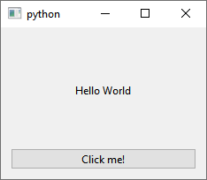
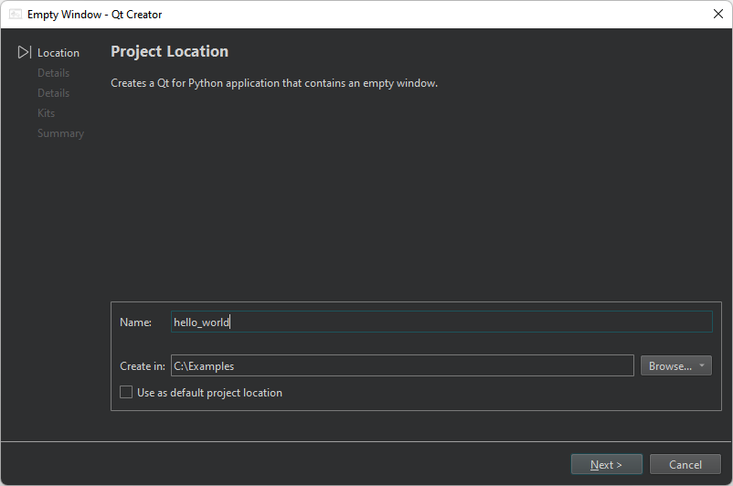
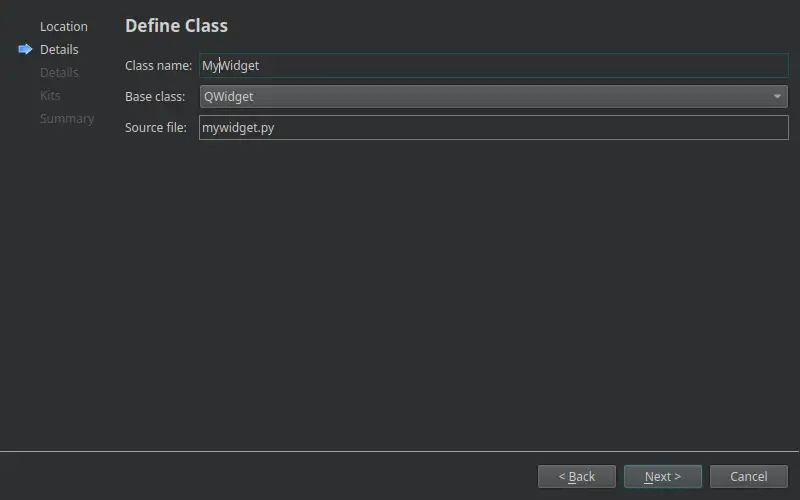
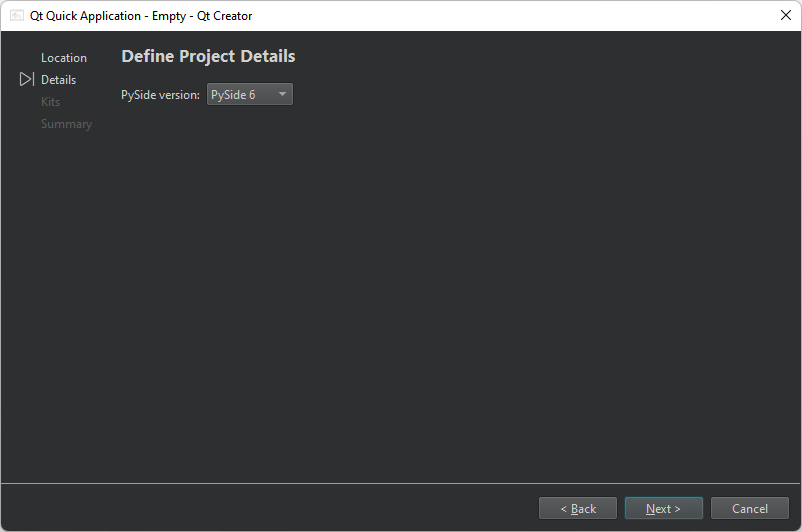
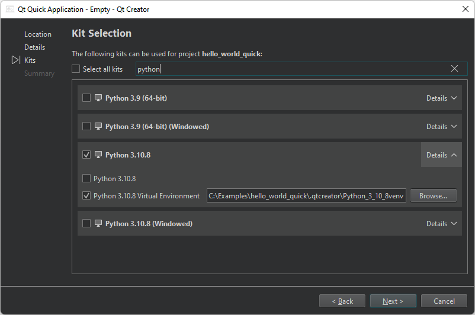
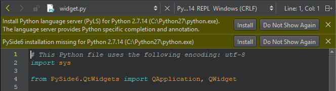

Tutorial: Qt Widgets and Python
First, create a Qt for Python application project. Then, edit the boilerplate code to develop a small application that uses Qt widgets to display the text Hello World in several languages.

For more examples of creating Qt for Python applications, see Qt for Python Examples and Tutorials.
Create an empty window project
To create a Qt for Python application that has the source file for a main class:
- Go to File > New Project.
- Select Application (Qt for Python) > Empty Window > Choose to open the Project Location dialog.

- In Name, enter the project name. For example, hello_world.
- In Create in, enter the path for the project files. For example,
C:\Examples. - Select Next (on Windows and Linux) or Continue (on macOS) to open the Define Class dialog.

- In Class name, enter MyWidget as the class name.
- In Base class, select QWidget as the base class.
Note: The Source file field is automatically updated to match the name of the class.
- In Project file, enter a name for the project file.
- Select Next or Continue to open the Define Project Details dialog.

- In PySide version, select the PySide version of the generated code.
- Select Next or Continue to open the Kit Selection dialog.

- Select Python kits for building, deploying, and running the project. By default, this creates a virtual environment for the project inside the source directory. To use the global interpreter, select the build configuration with the same name as the Python of the kit in Details.
- Select Next or Continue.
- Review the project settings, and select Finish (on Windows and Linux) or Done (on macOS) to create the project.
The wizard generates the following files:
pyproject.toml, which lists the files in the Python project and other configurations.mywidget.py, which has some boilerplate code for a class.requirements.txt, which stores the PySide version of the generated code. You can use this file to install the required PySide version using pip.
Install PySide6 for the project
In the Edit mode, select Install to set up PySide6 for the project.

Add Qt Widgets imports
The wizard adds the imports to the mywidget.py source file for access to the QApplication and the base class you selected in the Qt Widgets module, QWidget. In addition, you need to import random and QtCore for randomly selecting the language of the displayed text and QtWidgets for adding UI elements:
import sys import random from PySide6.QtWidgets import QApplication, QWidget from PySide6 import QtCore, QtWidgets
Add a widgets-based UI
The wizard adds a main class with the specified name that inherits from the specified base class:
class MyWidget(QWidget):
def __init__(self, parent=None):
super().__init__(parent)
...
Add button, label, and layout widgets to create UI elements:
...
self.hello = ["Hallo Welt", "Hei maailma", "Hola Mundo", "Привет мир"]
self.button = QtWidgets.QPushButton("Click me!")
self.text = QtWidgets.QLabel("Hello World",
alignment=QtCore.Qt.AlignCenter)
self.layout = QtWidgets.QVBoxLayout(self)
self.layout.addWidget(self.text)
self.layout.addWidget(self.button)
...
Add signals and slots
Then, add a signal and a slot to implement the random function:
...
self.button.clicked.connect(self.magic)
@QtCore.Slot()
def magic(self):
self.text.setText(random.choice(self.hello))
Add a main function
The wizard adds a main function, where it creates a QApplication instance. As Qt can receive arguments from the command line, you can pass any arguments to the QApplication object. Usually, you do not need to pass any arguments, and you can use the following approach:
if __name__ == "__main__":
app = QApplication(sys.argv)
...
Instantiate the MainWindow class
The wizard instantiates the MainWindow class and shows it:
... widget = MyWidget() widget.show() ...
Execute the Qt Code
Finally, the wizard calls the app.exec() method to enter the Qt main loop and start executing the Qt code:
... sys.exit(app.exec())
Run the application
Select  (Run) to run the application.
(Run) to run the application.
See also Tutorial: Qt Quick and Python, Tutorial: Qt Widgets UI and Python, and Develop Qt for Python Applications.